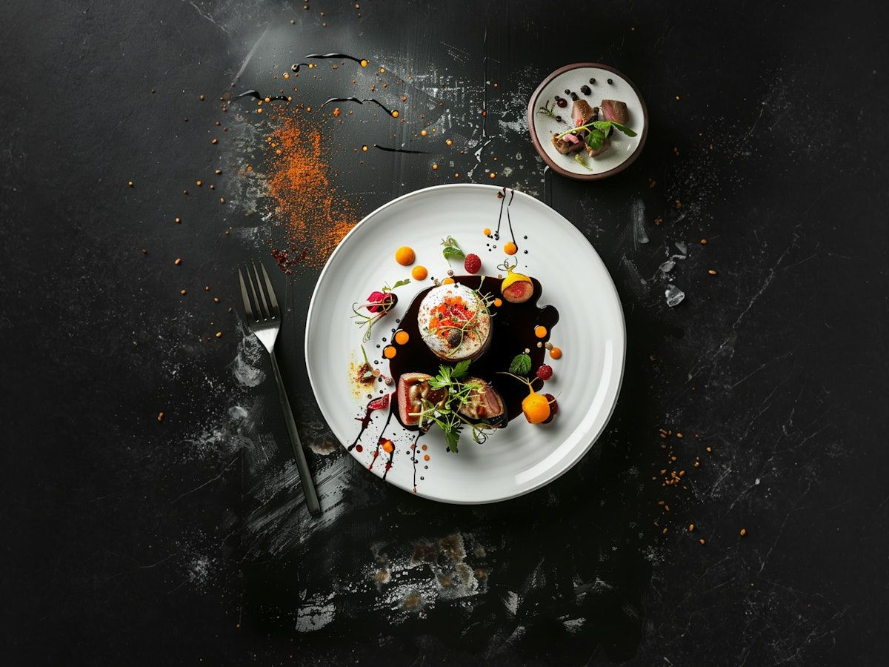

Home · Menu
The menuCooked tonight, gone tomorrow
Our à la carte changes with the market — what follows is this week's. The signatures never leave; everything else follows the seasons.
Saffron & Tomato Broth
£11Clear consommé, confit tomatoes, basil oil, grilled sourdough crisp.
Hand-Dived Scallops
£17Seared scallops, cauliflower velouté, curry leaf, golden raisin.
Burrata & Ember Peppers
£13Creamy burrata, fire-blistered peppers, saffron honey, grilled focaccia.
Cured Sea Trout
£15House-cured trout, pickled fennel, rye crisp, dill crème fraîche.
Charred Leeks, Romesco
£12Whole leeks off the coals, almond romesco, sherry caramel, chive oil.
Chicken Liver Parfait
£13Silky parfait, saffron & apricot chutney, toasted brioche.
Saffron Risotto
£24Carnaroli rice, aged parmesan, brown butter, a whole pinch of Persian saffron per plate.
Ember Salmon
£29Crisp-skinned salmon off the coals, charred asparagus, herb oil, saffron beurre blanc.
Dry-Aged Ribeye
£3835-day aged ribeye for one, bone-marrow butter, ember onions, red wine jus. Add truffle fries £6.
Slow Duck Leg
£27Confit duck, spiced lentils, charred orange, saffron & honey glaze.
Wild Mushroom Agnolotti
£23Hand-folded pasta, roasted mushrooms, chestnut, sage butter, aged pecorino.
Whole Grilled Sea Bream
£34For the table — fennel salad, green olive & lemon salsa, saffron aioli.
Midnight Chocolate
£1370% single-origin chocolate, cocoa-nib crumble, olive oil, smoked salt, warm ganache poured tableside.
Saffron Panna Cotta
£11Golden panna cotta, poached pear, honeycomb, bee pollen.
Burnt Basque Cheesecake
£12Caramelised top, molten middle, macerated plums, bay leaf cream.
Quince & Almond Tart
£11Frangipane, saffron-poached quince, brown butter ice cream.
Cheese, Done Properly
£16Four British farmhouse cheeses, quince paste, walnut bread, truffle honey.
Affogato & Biscotti
£8Vanilla gelato drowned in double espresso, house almond biscotti.
The Saffron Old Fashioned
£15Bourbon, saffron syrup, orange oils, a wisp of applewood smoke — our bar's calling card.
Ember Martini
£14Gin, dry vermouth, charred lemon, olive brine mist.
Golden Hour Spritz
£12Prosecco, saffron & peach cordial, soda, thyme. Zero-proof version £8.
Natural Wines by the Glass
£9–16A rotating list of low-intervention pours — ask the team what's open and interesting tonight.
Craft Beers & Cider
£6–8Two local taps and a short bottled list, chosen to sit happily next to spice.
Saffron & Honey Iced Tea
£6Cold-brew black tea, saffron, honey, lemon — golden, cold, quietly addictive.
The Chef's Counter — nine courses, six seats
Sit at the marble counter in front of the kitchen and let Chef Amara cook the menu she wishes existed. Nine courses built around the day's best produce, saffron running quietly through all of them.
£95 per guest · optional wine pairing £55 · vegetarian counter menu always available. One sitting nightly at 7:00 pm — reserve the counter.
I.
Saffron broth, confit tomato, basil — the welcome.
II – IV.
Cured trout · scallops off the coals · charred leeks with romesco.
V – VII.
The risotto · ember salmon or dry-aged ribeye · a pause of cheese.
VIII – IX.
Saffron panna cotta, then Midnight Chocolate to finish.

Hungry? Good.
Book ahead for weekends and the chef's counter — or try your luck at the bar, where we keep a few seats for walk-ins.